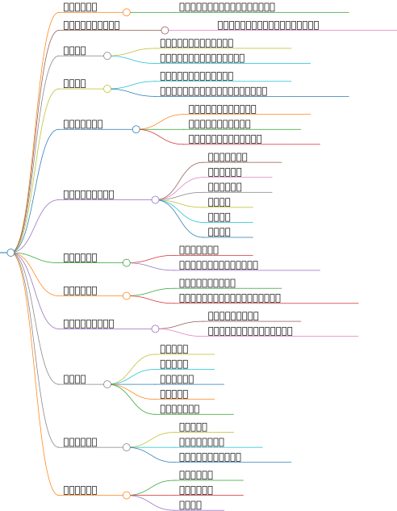

通过问卷调查法收集用户对不同视频平台的喜好和体验评价，包括界面友好程度、内容质量、推荐算法准确度等方面的评价。
设计问卷：根据研究目的，设计包含上述评价维度的问卷。问卷应简洁明了，避免引导性问题，并包含开放性问题以收集更深入的用户反馈。
样本选择：选择代表性的用户群体作为样本，可以通过随机抽样或分层抽样等方法，确保样本的多样性和代表性。
发放问卷：通过线上或线下方式发放问卷，可以使用社交媒体、电子邮件或现场调查等方式。
数据收集：设定合理的回收期限，收集填写完毕的问卷。
数据分析：使用统计软件对数据进行整理和分析，包括描述性统计和推论性统计，以揭示用户体验的差异和特点。
利用工具如Lighthouse对各视频平台的网页端性能进行量化评估，包括页面加载速度、交互性能、响应时间等指标，以此比较各平台的技术性能表现。
选择评估工具：选择适合的网页性能评估工具，如Google的Lighthouse，它可以提供详细的性能报告。
测试环境准备：确保测试环境稳定，关闭不必要的后台程序和服务，以减少干扰。
执行测试：使用选定的工具对各视频平台的主页和常用功能页面进行性能测试。
数据记录：记录每次测试的结果，包括加载时间、交互响应时间等关键指标。
结果分析：对比不同视频平台的性能数据，分析其技术性能的优劣势。
收集并分析各视频平台客户端的相关信息，如安装包大小、程序本体大小、程序运行时的内存占用等指标，以量化比较各平台的客户端性能和资源占用情况。
数据收集：使用专业的客户端分析工具，如Android Studio的Profiler或iOS的Instruments，收集各视频平台客户端的性能数据。
数据处理：整理收集到的数据，去除异常值和错误数据，确保数据的准确性。
性能评估：根据收集到的数据，评估各平台客户端的性能和资源占用情况。
结果分析：对比不同视频平台的客户端性能，分析其性能和资源占用的差异。
对比研究中的视频平台与其竞品，在用户体验、内容质量、技术性能等方面进行对比，揭示各平台的优势和劣势所在。
竞品选择：选择与研究对象相似的视频平台作为竞品，考虑其市场份额、用户基数等因素。
数据收集：收集竞品的公开数据，包括用户评价、市场份额、财务报表等。
性能评估：使用前面提到的工具和方法，对竞品的性能进行评估。
结果分析：对比研究对象和竞品的数据，分析其在用户体验、内容质量、技术性能等方面的优势和劣势。
通过对各平台上热门内容的内容质量、原创性等进行评估，探讨平台内容生态对用户体验的影响。
内容选择：选择各视频平台上的热门内容作为评估对象，可以通过平台的热搜榜单或用户推荐等方式获取。
内容评估：组建专家团队，根据内容质量、原创性等标准对选定的内容进行评估。
数据记录：记录评估结果，包括内容的质量得分、原创性等级等。
结果分析：分析不同视频平台内容质量的差异，探讨内容生态对用户体验的影响。
以上研究方案结合了您的研究背景、意义及目的，旨在全面评估不同视频平台的用户体验，为平台改进和用户选择提供参考依据。
设计有效的问卷来收集用户对视频平台的用户体验评价，可以遵循以下步骤：
在设计问卷之前，首先要明确调查的目的和目标受众。这将帮助你决定问卷的内容和结构，确保问卷能够准确地反映用户的体验和需求。
问卷应该包含多种类型的问题，如单选题、多选题、评分题和开放性问题。问题应该简洁明了，避免使用专业术语，以免造成误解。同时，确保问题覆盖视频平台的各个方面，如内容质量、用户界面设计、功能体验、广告与付费模式、社交互动等。
问卷的长度不宜过长，以免用户失去耐心。一般来说，简短的问卷更容易被用户完成。此外，问卷的格式应该清晰易读，可以使用在线问卷工具如SurveyMonkey或Typeform来创建和分享问卷。
在正式发布问卷之前，最好进行预测试，以检查问题是否清晰，是否存在歧义，以及是否能够有效地收集到所需的信息。
选择合适的平台发布问卷，并利用多种渠道推广以获取足够的响应。在收集了足够的数据后，使用统计和分析工具来挖掘其中的模式和洞见，以指导产品的改进。
根据问卷结果，分析用户的反馈，识别用户的需求和痛点，然后制定相应的改进措施。这些措施可能包括优化产品功能、改进用户界面设计、调整广告策略等。
通过上述步骤，你可以设计出有效的问卷来收集用户对视频平台的用户体验评价，从而为产品的改进提供有力的数据支持。
Lighthouse是Google开发的一款开源工具，用于全面评估网页质量，包括加载性能、可访问性、最佳实践和PWA（Progressive Web App）支持程度。它通过一系列的测试来生成关于网页性能的报告，帮助开发者发现潜在的问题并进行优化。
Lighthouse的性能评估涵盖多个方面，主要包括以下几个核心指标：
首次内容绘制（First Contentful Paint, FCP）：测量浏览器首次将任何内容（如文字、图像、canvas等）绘制到屏幕上的时间点。
最大内容绘制（Largest Contentful Paint, LCP）：加载页面中元素到屏幕上的最长时间点。
可交互时间（Time to Interactive, TTI）：所有的页面内容都已成功加载，且能够快速地对用户的操作做出反应的时间点。
速度指数（Speed Index, SI）：衡量了首屏可见内容绘制在屏幕上的速度。
总阻塞时间（Total Blocking Time, TBT）：网页被阻塞与用户交互的时间。
累积布局偏移（Cumulative Layout Shift, CLS）：页面的布局在加载时的偏移程度。
Lighthouse可以通过多种方式使用，包括：
Chrome DevTools：在Chrome浏览器的开发者工具中集成了Lighthouse，可以直接在浏览器中进行性能测试。
命令行工具：可以通过Node CLI工具运行Lighthouse，这允许开发者将Lighthouse集成到持续集成系统中。
Web界面：一些在线服务提供了基于Lighthouse的网页性能测试功能，用户可以直接在网页上输入URL进行测试。
Lighthouse生成的报告包含了详细的性能数据和优化建议，开发者可以根据报告中的信息找出网站的性能瓶颈，并采取相应的优化措施。报告中的得分范围从0到100，分为三个等级：0-49（慢）、50-89（平均）、90-100（快）。高分表示网站在相应的评估方面表现良好，低分则提示需要进一步优化。
通过这些指标和报告，Lighthouse帮助开发者提高网站的性能，从而提升用户体验和网站的整体质量。
在进行视频平台的竞品分析时，可以选择以下几个关键指标来比较用户体验：
界面设计的简洁明了是提升用户体验的关键。需要关注色彩搭配、图标设计、布局排版等方面，确保用户能够快速找到所需内容，并注重界面的响应速度，确保操作的及时性和准确性。
功能设计是视频平台的核心竞争力之一。应根据用户需求和市场趋势，不断迭代更新功能，如个性化推荐、播放器性能优化、多语种支持等。通过优化功能，可以提升用户黏性和满意度。
良好的交互流程能够使用户快速完成任务并获得所需信息。需要关注用户使用习惯和心理预期，对交互流程进行细致打磨，如简化注册流程、提供操作提示、实现一键式操作等。
为了确保交互体验的优化效果，应进行充分测试并收集用户反馈。通过内部测试发现潜在问题并解决，通过用户反馈了解真实使用场景下的痛点和期望，为后续优化提供依据。
利用数据监控和分析工具对平台进行实时监测，能够及时发现问题并进行调整。通过收集用户行为数据、使用时长、跳出率等指标，可以深入了解用户需求和市场变化，指导交互体验优化工作。
随着移动设备的多样化，确保平台在各个平台上的交互体验一致性至关重要。涉及不同操作系统、屏幕尺寸和分辨率的适配问题。应遵循跨平台设计规范，确保在不同环境下都能提供良好的用户体验。
交互体验的优化是一个持续的过程。保持敏锐的市场洞察力，定期对产品进行迭代更新，通过不断优化设计细节、引入新技术和整合用户反馈，持续提升产品的竞争力和用户满意度。
以上指标可以帮助您全面评估视频平台的用户体验，并根据分析结果进行相应的产品优化和市场策略调整。
用户体验因素
个性化推荐系统
用户界面设计
用户使用习惯
内容偏好
粉丝互动
营销效应
用户特征
年轻用户占多数
追求新鲜、有趣、潮流内容
具有分享和传播欲望
高活跃度
用户需求分析
获取新鲜资讯、学习新知识、娱乐放松
利用碎片化时间浏览和分享
用户行为研究
使用短视频平台超过1小时
喜欢观看搞笑、小品、美食等内容
用户满意度和使用频率
超过80%用户每天使用超过1小时
用户对短视频平台表现出高度满意
用户调研和竞品分析
定义调研目标
设计调研问卷
发放问卷
研究方法
问卷调查法
网页性能分析法
客户端分析法
竞品分析法
内容质量评估法
研究意义及目的
比较不同视频平台的用户体验
揭示平台特点、优势和不足
提供改进建议，优化服务，提升用户忠诚度和平台竞争力
为用户提供选择视频平台的参考依据
用户体验优化
提高用户共性体验
提高个性化用户体验
提高移动视频用户观看体验
研究背景
短视频平台成为生活中不可或缺的部分
用户体验直接关系到平台使用和推荐
短视频平台用户规模不断扩大
